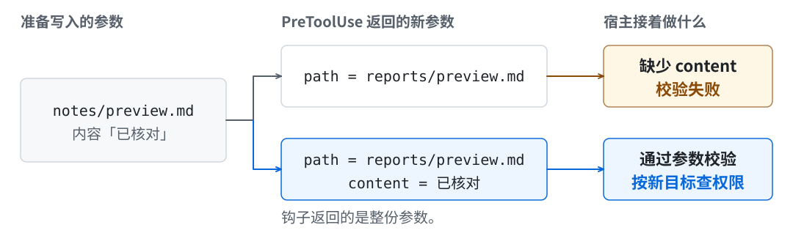
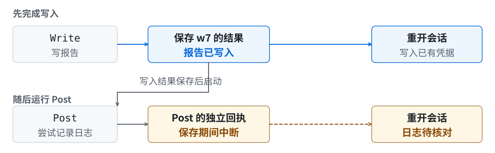

工具执行前后，Hook 在哪里起作用
模型要把一行“已核对”写进 notes/preview.md。项目里有条约定，核对报告都应放进 reports。于是写入前的 Hook 把目标改成了 reports/preview.md。第一次推演只交回新路径，程序就报了缺少 content，确认框也没出现。换个路径，为什么原来那行文字也没了？
只交回新路径，正文跟着丢了
模型把原始请求交给程序，程序给它记了个调用编号 w7，以后用这个编号把写入结果送回去。文件还没有打开。宿主在动手前先运行一条项目预先配置的命令，让它看这次提议。这就是 PreToolUse，我们把挂在这个时点的命令叫前置 Hook。

先看图的上半幅。命令只回 path，看起来是在说“其余照旧”。执行器收到的意思却是“这就是交给 Write 的完整输入”。下面追一下这条命令何时会被选中，程序又怎样读懂它的回话。
配置里写了哪一个时点？
这条规则要在写入之前检查，所以事件选 PreToolUse，匹配器盯住 Write。程序选中命令以后，把本次事件的 JSON 从标准输入交给它，其中有工具名和模型给的参数。想在写完后记日志，配置相同的工具名，事件换成 PostToolUse，那时载荷才有原工具的结果。
匹配依据随事件变化。比如 SessionStart 能按启动或恢复来源匹配，工具事件可以再用 if 筛参数。命令默认最多等 30 秒，配置的 timeout 以毫秒计，填 0 时取消这项时限。程序对输出也设了上限。命令若超时或输出超限，这次就给不出拦截或改参意见。程序会继续处理其余 Hook，再按独立的权限规则判断写入。命令时限与输出处理
在 CoreCoder 的同一场景里，可以让前置命令用退出码 2 拦住写入，并把理由交回模型。若存也懂这个退出码。它把理由配给 w7，模型会看到为什么这次没写成。若要把写入改到 reports，若存还允许命令带回结构化的 updatedInput，于是同一次提议可以带着新参数再过一遍检查。CoreCoder 扩展篇
单写一句“请附上工单号”，这段文字可作为额外材料；显式的 permissionDecision 才会被权限判断使用。命中多条命令时，程序收集各条上下文，权限意见取最强的那个，deny 高于 ask，后者高于 allow。参数则用最后一个给出的完整对象。多条 Hook 的输出如何汇总
确认框里该出现哪份文件？
先让开头的写入走过去。把“已核对”也放回输出，Hook 就交齐了 Write 需要的两项。按下面这份输入推演，ask 表示要把写入交给用户确认。
{"hookSpecificOutput":{"permissionDecision":"ask","updatedInput":{"path":"reports/preview.md","content":"已核对"}}}src/ruocun/tools/tool_batch.py · 第 183–189 行
decision = "deny" if outcome.block else outcome.permission_decision
if outcome.updated_input is not None:
raw = hookJSON(outcome.updated_input)
if ctx.signal.is_set():
results[call_id] = _message(call_id, _CANCELLED)
continue
args = registry.validate(name, raw)留意 raw 的那次赋值。只给新路径时，旧对象里那句“已核对”已经随旧参数一起离开了。registry.validate 收到的就是缺 content 的新对象，它先回参数无效。补齐以后，才有一项描述完整、可以让用户决定的写入。
把图下面的完整输出也交给 Claude Code。官方说明里，updatedInput 同样替换整个输入对象，权限规则也会拿改后的对象来判断。在普通交互里，配上 ask 让用户看到的是新路径。较容易漏掉的是下一步：若存这里先确认 reports/preview.md 和正文都已交齐，才会走到需要用户判断的那一关。Claude Code · 前置 Hook 怎样改参与询问
「用户要同意的是工具实际要写的那份文件。」 原先允许 notes/preview.md，换成 reports/preview.md 就按新目标判断。前置命令给 deny 可以拦住操作，给 ask 可以要求询问。给 allow 时，只可能替符合条件的非敏感询问省一次确认。权限规则明令拒绝新路径，设置里的这条 Hook 也让它走不过去。
若用户在确认框里拒绝，程序把拒绝配回 w7，模型可以报告未写或问用户要不要改目标，需要重新发起调用才能写。回归测试把两次写入分别改到 blocked.txt 和 confirmed.txt。前者即使拿到 Hook 的 allow，也没有生成文件。后者交给审批的参数是改后的路径。获准后，只有改后的文件落盘，Post 也记录了它。改参后仍守住权限的测试（项目回归测试） · 回看批准怎样绑定实际参数
文件已经写好，日志却少了回执
这次用户同意了新目标。Write 返回写入结果，程序先把结果记到 w7，然后才让匹配的 Post 命令做审计记录。看下面的两步。对于已经写文件的操作，结果保存失败时，程序会先停下，等原写入的结果核实后再处理，Post 命令还轮不到启动。
src/ruocun/tools/tool_batch.py · 第 304–321 行
if journal is not None:
try:
if image is None:
saved = (ShellToolOutput(result, failed=shell_failures[call_id])
if call_id in shell_failures else result)
await journal.result(call_id, saved)
else:
await journal.result(call_id, result, image)
except Exception as exc:
if not effect:
raise
raise UnknownToolOutcome(
f"工具结果保存未确认（{type(exc).__name__}），已停止；请核实原操作。"
) from exc
if finished_handler and hooks is not None and call_id in post_hooks and not ctx.signal.is_set():
post_ctx = RunCtx(hook_cwd, tool_name=tool.name, args_json=raw,
payload={"tool": tool.name, "args": raw, "result": result})
await _invoke_tool_hook(hooks, "PostToolUse", call_id, post_ctx, ctx.signal, post_hooks[call_id], journal)Post 拿到的是实际参数和 Write 回的文字。这里说的“处理器正常返回”，只表示它交回了工具输出。假如别的工具回的是“检查未通过”，记日志的命令仍应照实记下失败。拿到一条回包和业务成功是两回事。
假设 Write 已成功，后置命令还想交代一句“下一步核对预览页”。Claude Code 支持同步的 Post Hook 用 additionalContext 把这句话和工具结果一起交给模型。若存的这条派发路径把 Post 的执行结果另行登记，最终交回的仍是已经存下的工具结果。前一种接口能让 Hook 提醒模型接着做什么。后一种让工具回包和后置命令的收据各有出处。文件是否写过，要查同一次 Write 的结果。Claude Code · PostToolUse 反馈 · 本地结果保存与后置调用

现在文件已经写好。Post 命令可能加了一行日志，程序在保存它的回执时中断。重开看到 Write 的成功记录，能确认报告已落盘。要知道是否还欠日志，得查 Post 自己的意图和收据，也就是这道命令执行前后分别留下的记录。
src/ruocun/hooks/journal.py · 第 51–65 行（已有收据的分支）
metadata = {"toolCallId": identity, "args": context.args_json, "selection": fingerprint, "cwd": context.cwd}
if context.tool_name is None:
metadata["payloadDigest"] = _digest(hookJSON(context.payload))
metadata["source"] = context.source
try:
# 先登记事件和本次命令的身份。恢复时，可用经过校验的旧收据直接返回结果。
cached = await journal.intent(call_id, name, hookJSON(metadata), True)
if cached is not None:
if not isinstance(cached, str):
raise ValueError("Hook receipt must be text.")
receipt = json.loads(cached)
payload = receipt["outcome"]
if not isinstance(payload, str) or _digest(payload) != receipt["digest"]:
raise ValueError("Hook receipt differs from the completed output.")
return HookOutcome(**json.loads(payload))记录接口先按事件和原身份找旧收据，同时核对最终参数、目录和已选命令。在代码里，找回收据后，先用 _digest(payload) 核对里面的结果有没有变。值对得上，程序才还原成之前的 HookOutcome，在 runtime.run 之前返回。已经开始执行但收据缺失，或核对时发现收据不可信，就留待核实。多记这一层的好处是，恢复时能分别追问“文件有没有写”和“日志有没有追加”。回看如何核实未确认的操作
验收流程该放在哪一层？
接着做第 18 章的 CSV 验收。这次要把核对结果写成一份报告。模型按 Skill 的步骤查了表头和时间列，又用 MCP 查到团队本月要求存进 reports。
模型提出把报告写到 notes/export-audit.md。前置 Hook 保留正文，按本月的约定把目标换到 reports/export-audit.md。假设当前会话允许写 notes，明确拒绝写 reports。报告能写进去吗？
这次推演里，程序按改后的 reports/export-audit.md 裁决，给模型的回包会说写入被拒。Write 没动手，后置日志也没启动。模型可以先把核对结果告诉用户，再问报告要改存到哪里。另发一次 Write，也要检查 Hook 处理后的实际目标。
下个月，报告目录改从项目配置里读，值还是 reports。如果交给 Write 的最终路径仍是 reports/export-audit.md，拒绝规则也没变，程序照样在动手前停下。要判断报告能不能写，先看 Hook 最后交了哪条路径，再用这条路径核对当时的权限规则。
两条新记录，该从哪里查？
1． 两个匹配的 Pre Hook 先后给出 updatedInput。第一个给 path=reports/a.md 和正文，第二个只给 path=reports/b.md，同时要求询问用户。此时应弹出哪个文件的批准框？怎么改才能对正确目标提问？
展开详答
后一个提供的参数对象整体生效，只剩 b.md 的路径。Write 缺 content，校验阶段就会反馈错误，此时没有可供批准的有效写入。让第二个 Hook 返回带 b.md 和正文的完整参数，再按实际参数重新校验并授权。
2．追踪恢复 · Write 结果已保存，Post 意图存在但日志没有可信收据，先核对谁？
展开详答
分别查原工具与 Post 的记录。Write 确认完成后保留该结果，核对 Post 是否已经登记日志，避免重复执行任何有副作用的命令。
这一章带走什么
- 前置 Hook 换了路径，也要交齐正文。后续校验和审批使用实际执行的那份参数，用户才知道自己正在同意哪一个动作。
- 文件写完以后，日志仍是另一项工作。给 Post 留下独立的收据，重开时才能保住已经确认的写入，只追那条还不明的日志。
这次推演里，写入被拦在了打开文件前。把同一批任务交给两版程序。如果两版总分一样，怎么查出这道保护在哪些题上起了作用？
面经自测
工具循环里的 Hook 放在哪些时点，处理结果怎样影响后续步骤？
字节跳动 · 一面 · 面经原帖 · 题意转述
展开参考回答
前置 Hook 在工具动手以前拿到请求，可以改参数、建议询问或拦下调用。程序还要用最终参数检查权限。后置 Hook 等工具结果保存好了，才拿到结果做后续工作。
比如写报告的路径从 notes 换到 reports，就重新检查 reports；文件写完后记日志失败，我会查日志有没有写成，避免把报告再写一遍。
哪些资料适合放进知识库，哪些内容适合写成 Skill？
字节跳动 · 一面 · 面经原帖 · 题意转述 可回看 第 3 章 第 5 章 第 18 章
展开参考回答
常变的事实放进可查询的资料，可重复的做法写成步骤。若“写前必须核对权限”需要强制执行，还得在程序实际动手前检查最后的目标。
Agent 进程重启后，怎样避免把已经写过的工具再执行一次？
科大讯飞 · 一面 · 面经原帖 · 题意转述 可回看 第 8 章 第 19 章
展开参考回答
先按原调用各自的记录查清做过什么。文件写好了就保留它。后来追加日志的 Hook 是否执行，要查日志命令自己的记录。
在服务端，工具参数的类型、取值范围、访问的资源和权限分别怎样检查？
小红书 · 一面 · 面经原帖 · 题意转述
展开参考回答
我先检查字段和取值，再核对最终会访问哪个资源、这次允不允许动它。如果前置规则改过参数，就用改后的整份参数重新查。
若存原本要写 notes 下的文件，Hook 换成 reports 后，字段和权限都按 reports 的目标判断。原路径上那次批准不能拿来代用。
Hook 只交回一个新路径，漏了原有的 content，若存会自动补上吗？
若存设计题
展开参考回答
前置 Hook 给了 allow，能盖过用户对最终路径的拒绝吗？
若存设计题
展开参考回答
工具处理器正常返回，后置 Hook 就能宣布业务成功吗？
若存设计题